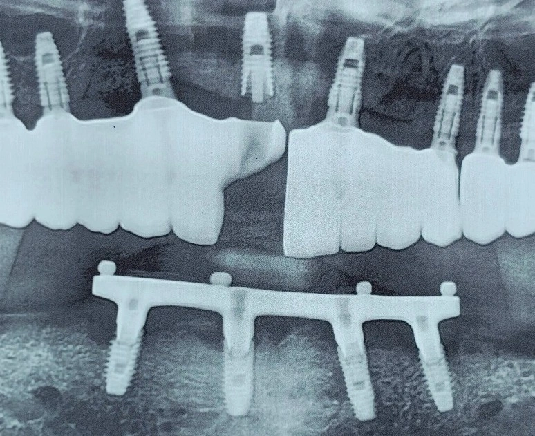

نسخه استخراجشده؛ ترجمه یا تأیید علمی انجام نشده است. وضعیت: captured
بیمار با شکستگی در بریج ایمپلنتی فک بالا مراجعه کرده است. در فک پایین اوردنچر روی بار دارد. در معاینه، پیچ اباتمنت شکسته و روکش همراه با اباتمنت و بخشی از سرامیک از بریج جدا شده است.

الگوی شکستگی سرامیک، الگوی شکستگی ناشی از ضربه بود، نه فرسایش تدریجی.
پس انکار ضربه فرضیهی ضربه را رد نمیکند؛ بیمار ضربهی بیرونی را به یاد میآورد، ولی منبع ضربه میتواند جای دیگری باشد.
نکتهای که ابتدا به ذهن نمیرسد: منبع ضربه میتواند خود سوپراستراکچر ایمپلنتهای فک پایین باشد. بیمار شبها اوردنچرش را درمیآورد. با درآوردن اوردنچر، وقتی دهان بسته میشود، بار فلزی روی ایمپلنتهای فک پایین مستقیماً با پروتز سرامیکی فک بالا تماس پیدا میکند.
این مرحلهی اول هر ویزیت است: تا ندانیم دقیقاً چه اتفاقی افتاده، درمان نمیتواند مؤثر باشد، چون همان عامل دوباره همان مشکل را ایجاد میکند.
هدف این بود که هزینهی زیادی به بیمار تحمیل نشود؛ پس درمان مرحلهبهمرحله جلو میرود و در هر مرحله بر اساس یافتهها تصمیم گرفته میشود:
اگر همهچیز طبق انتظار پیش برود، درمان با همین مسیر تمام میشود. اگر در هر مرحله مشکلی دیده شود (مثلاً آسیب فیکسچر یا عدم امکان اصلاح بریج)، کل بریج سمت راست بالا باید خارج و از نو ساخته شود.
نوع سؤال: ساخت کلمه · 7 خانه
حروف منبع: د · ن · ر · ا · ر · و · چ